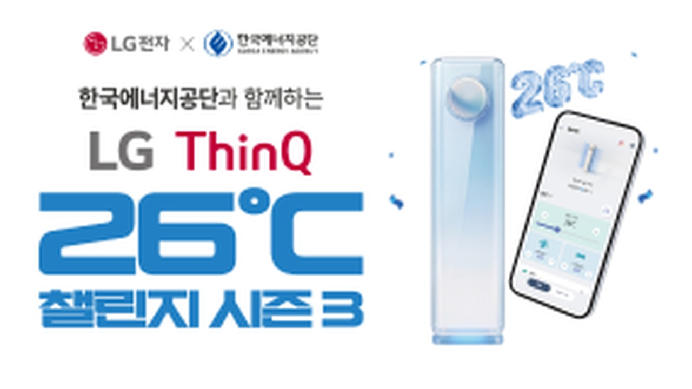
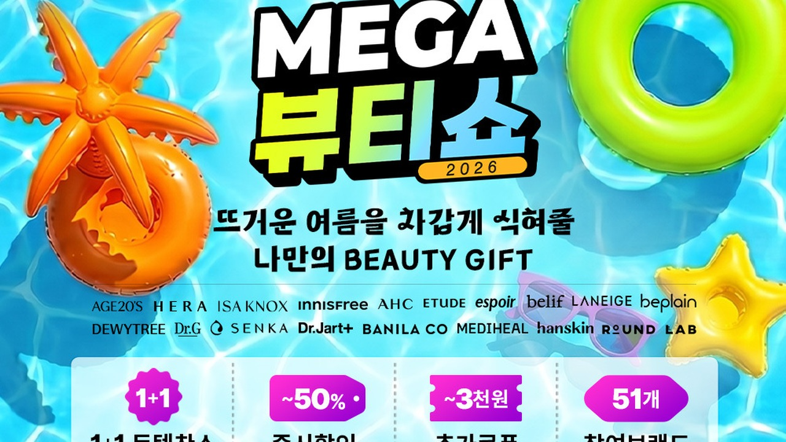
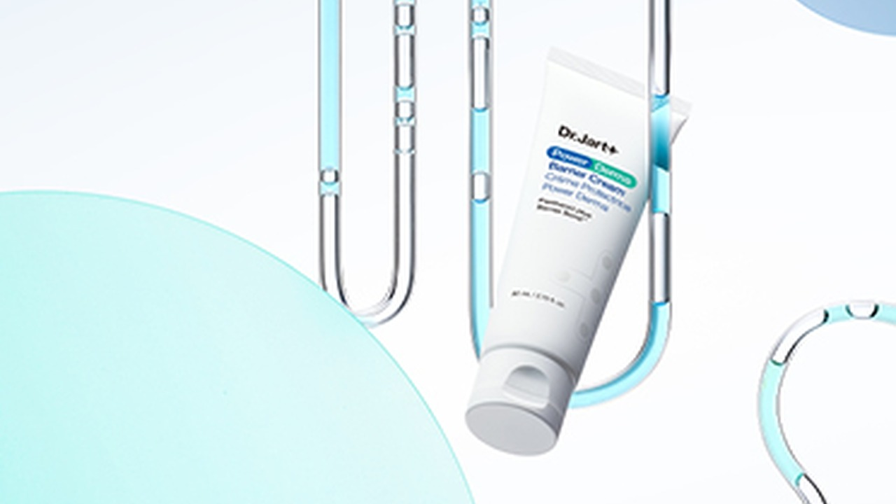
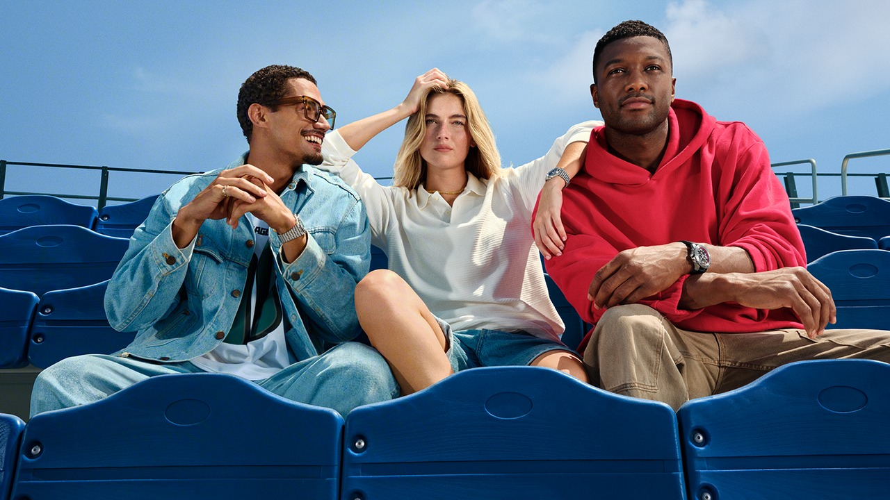
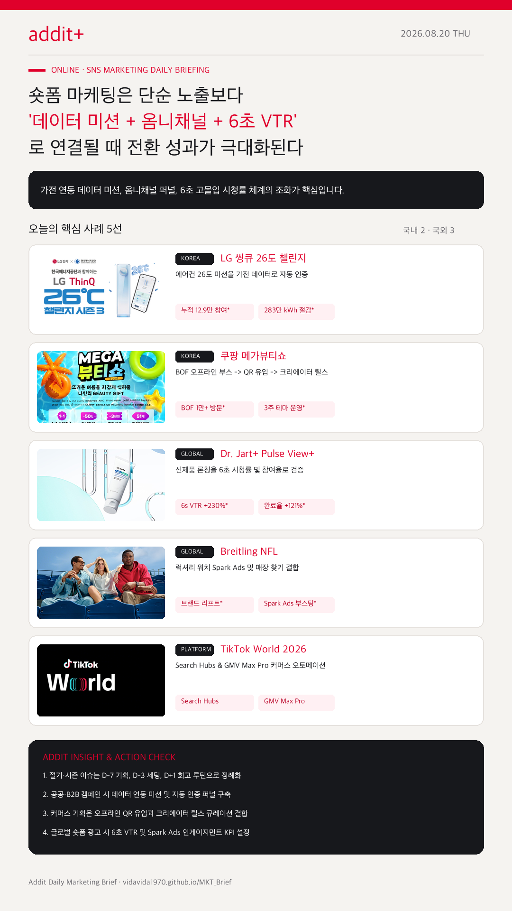

01
8월 말·9월 초 시즌 마케팅은 처서·MAD STARS 이슈와 묶인다
8월 23일 처서, 8월 26~28일 MAD STARS 및 9월 추석 캘린더에 맞춰 D-7 기획, D-3 세팅, D+1 회고 루틴을 구축합니다.
가전 연동 데이터 미션 ESG, BOF 팝업 QR 옴니채널 퍼널, 6초 VTR 고몰입 최적화, Spark Ads 및 AI 구조화 데이터 전환이 하나의 시스템으로 연결됩니다.
8월 23일 처서, 8월 26~28일 MAD STARS 및 9월 추석 캘린더에 맞춰 D-7 기획, D-3 세팅, D+1 회고 루틴을 구축합니다.
LG 씽큐(누적 12.9만 참여, 283만 kWh 절감) 사례처럼 단순 서약 포스터를 넘어 실제 데이터 연동 퍼널을 구현합니다.
쿠팡 메가뷰티쇼(BOF 부스 1만+ 방문)처럼 오프라인 현장 반응과 주차별 숏폼 기획전을 하나의 옴니채널 퍼널로 연결합니다.
Dr. Jart+(6s VTR +230%, 완료율 +121%) 및 Breitling(Spark Ads) 사례처럼 노출 단가 대신 품질 지표로 질적 성과를 입증합니다.
네이버 ADVoost Max 및 Google AI 라벨에 맞춰 웹사이트 FAQ, 주요 스펙, 차별점과 AI 생성 소재 투명성 가이드라인을 준비합니다.

KOREA희망온도 26도 이상 및 사용 시간을 LG 씽큐 앱 데이터와 연동해 자동 확인하고, 지난 2년 누적 12.9만 명 참여, 283만 kWh 전력 절감을 달성했습니다.

KOREA50여 개 브랜드, 레페리 뷰티 크리에이터 추천 영상, BOF 사전 부스 QR 유입을 결합해 오프라인 1만 명 이상 방문 및 예약 매진을 기록했습니다.

GLOBAL독일 시장 론칭에서 크리에이터 소재와 Pulse View+를 결합해 대조군 대비 6초 VTR 230% 상승, 인게이지먼트 84% 상승, 완료율 121% 상승을 달성했습니다.

GLOBALNFL 라이선스 워치 론칭 시 크리에이터 원본 감성에 Spark Ads 부스팅을 붙여 매장 로케이터 및 브랜드 카탈로그 탐색 동선을 직결했습니다.
 PLATFORM
PLATFORM검색 맥락을 잡는 Search Hubs와 AI 기반 GMV Max Pro로 소셜 발견에서 커머스 매출까지 단축시키는 오토메이션 플랫폼 솔루션입니다.
시즌 및 절기 이슈는 D-7 기획, D-3 론칭, D+1 회고 루틴으로 정례화합니다. 8월 23일 처서, 8월 26~28일 MAD STARS 일정에 맞춘 애드아이티 표준 운영 캘린더를 적용합니다.
나스미디어 마케팅 캘린더 근거 보기 →공공 및 B2B 마케팅 시 단순 서약/공지 포스터보다 데이터 연동 미션 및 퀴즈형 카드뉴스 퍼널을 도입합니다. LG 씽큐 챌린지 사례처럼 사용자 참여 데이터를 시각화해 보고서에 활용합니다.
LG전자 씽큐 보도자료 근거 보기 →뷰티·소비재 커머스 캠페인은 크리에이터 숏폼 큐레이션과 주차별 혜택 기획전을 결합합니다. 쿠팡 메가뷰티쇼 사례처럼 현장 QR 유입과 크리에이터 릴스를 결합해 전환을 유도합니다.
쿠팡 메가뷰티쇼 근거 보기 →글로벌 숏폼 광고 운영 시 노출량보다 6초 이상 몰입 시청률(VTR) 및 Spark Ads 인게이지먼트를 핵심 KPI로 설정합니다. Dr. Jart+ 및 Breitling 사례를 참조해 리프트 스터디를 수립합니다.
Dr. Jart+ 공식 사례 근거 보기 →AI 검색·답변 광고 생태계 대응을 위해 랜딩페이지의 FAQ, 대표 혜택, 상품 스펙 등 구조화 데이터를 사전 정비하고, 생성형 AI 광고 소재에 대한 투명성 검수 프로세스를 수립합니다.
네이버 ADVoost Max 공지 근거 보기 →Demand Gen 지면에서 Checkout Links를 통해 숏폼 시청자들을 결제 페이지로 직접 안내합니다.
Google Ads Blog →Search, YouTube, Discover 지면에 `How this ad was made` 패널이 전면 확대 적용됩니다.
Google Blog →
숏폼 마케팅은 단순 노출 단가 싸움에서 데이터 기반 행동 미션과 옴니채널 연결, 6초 고몰입 시청률 검증으로 이동하고 있습니다. 퍼널 간 데이터 연결이 갖춰져야 성과가 극대화됩니다.
{kind=link}